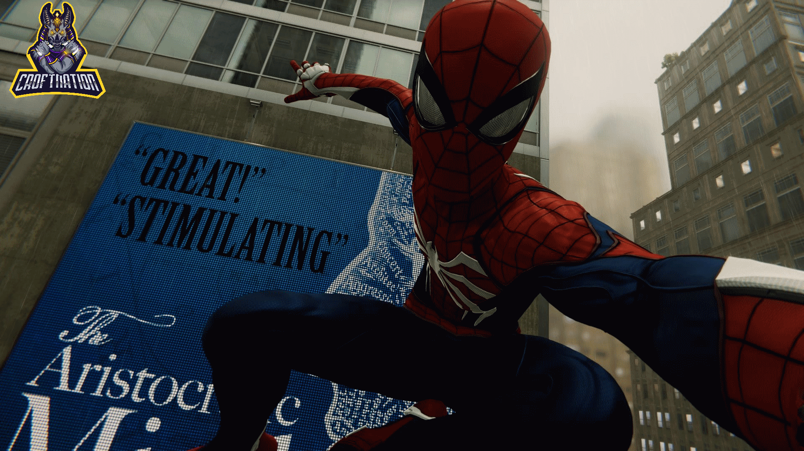

Spiderman Review (PS4)
23rd September 2018

Overall Score: 9.4/10
After a long awaited launch since it's first reveal back in June of 2016 and original release date of 2017, Marvel's Spider-Man has finally swung it's way onto PlayStation 4 this month and certainly onto my list of favourite story games in recent years. I understand that it's already been said to the point of redundancy, but the game does such an incredible job at making you feel like Spider-Man. However, not only Spider-Man, but also the man within the suit, Peter Parker himself.
I'll be basing my opinion on both the design aspects of the game, as well as the gameplay aspects and finishing up with my final thoughts. There's so much to say about this game and I hope to cover everything as in detail, and yet as concisely, as possible. Therefore without further ado, let's swing into it!
Though some may not think it important, I feel that a game's splash screen is just as important as any other design decisions that make it into the final release. Spider-Man's splash screen is no exception to this rule and shows off exactly what you're getting into without any need for excessive detail. Simply seeing Spider-Man latching onto a building overlooking the beautifully sunlit borough of Manhattan is enough to give players a clear perspective on how large and wonderful the world they're about to be thrown into is. Although it may not be exactly accurate, or to scale – like how the map doesn't reach any higher than 132nd street; the Wall Street Charging Bull is in fact Lockjaw and not a bull; and most notably, the lack of One World Trade Center; Insomniac's version of Manhattan is otherwise both incredibly detailed, and awesomely large. Although fast travel options do become available as you progress through the main missions, the want to use them is often overcome by the excitement that comes from swinging around between the streets instead.
What's great about Spider-Man's open world is the collectible options on offer within it. Although collecting them all may seem a little tedious and repetitive after a while, the uniqueness of the landmarks, backpack contents and secret photos themselves makes them incredibly enjoyable to collect. What I love about the backpack collectibles is that they each contain a small piece of lore that you get to hear Peter talk about each time you find one, making them not just a thoughtless and uninteresting collection of backpacks. He even remarks at one point about how he got a "lifetime supply of backpacks" just in case you found the idea of having so many backpacks a little ludicrous. As well as the backpacks, photographing the landmarks that Manhattan, both in fiction and non-fiction has to offer, including amazing sights such as the Empire State Building, Avengers Tower, Times Square, and so many more, including secret photo locations such as the Statue Of Liberty; provides an immersive and fresh take on side missions and activities. Insomniac's take on open world collectables is refreshing to see compared to the boring and unenjoyable task of collecting the same item over and over more often seen in games of the same genre. I hope that more open world games developers can take note and put more detail into their collectibles in future.
Another plethora of visual treats within Marvel's Spider-Man is of course the costumes. Not just for Spider-Man himself, but for the other characters as well. The level of detail and fan service put into each of the available to unlock suits for Spider-Man is incredible. With the ability to unlock fan favourite suits such as the Spider-Man Homecoming Stark Suit, and Iron Spider suit, as well as The Scarlet Spider and a couple of Spiderman 2099 suits, the game provides you a large amount of freedom as to which Spider-Man you want to be. There are even a few quirky suits that are harder to unlock such as the home-made Homecoming suit, as well as a suit comprised of the regular mask and Spidey-Underwear. What's great about the suits in this game is that not only does each one come with it's own unique suit power ranging from a wide variety of abilities, but you are free to use one suit's power with another should you so wish. On top of the suit powers available, you are able to unlock and equip three out of a large variety of suit mods. These mods can be unlocked by collecting a variety of tokens from side missions and challenges and spending them to unlock these mods. The vast majority of these suit mods are extremely helpful and provide bonuses such as refilling gadgets quicker, healing more, and earning focus (used to heal and perform finishers) faster. The freedom to apply whatever power and mods to whichever suit you like gives the player the ability to make their own decisions on what sort of Spider-Man they want to be and how they want to play.
On top of Spider-Man's look, there are many other characters in the game whose outfits and designs are incredibly well crafted. A lot of the villains in this modern age Spider-Man game have been seen in other media for decades and therefore have a pretty well defined look, however Insomniac does a good job of keeping the designs of these characters fresh and modern. Included in these characters is fan favourite enemy, Electro. One of Spider-Man's oldest rivals, Electro has usually been seen with his signature yellow, lighting shaped mask. In my opinion, the choice to leave this mask out of his character design is better fitted to the modern day world that Insomniac has created, but instead of completely removing this feature they call homage to it by making the scars on his face the same shape. Although it may not be that acclaimed, I think it does a great job of helping make this new entry into the Spider-Man series appealing to both long time fans, as well as newcomers.
As well as villains, the game's side characters and even Peter Parker himself are all designed wonderfully. You can see the amount of effort and detail that has gone into each individual character, from their clothing and aesthetic, to their facial expressions and mannerisms. One thing that Spider-Man does so incredibly well is making each character feel so incredibly real and relatable. As the story progresses, you see the good and bad in these characters, their worries and fears, their sense of humour, their deep desires and feelings. It's as if you've sat down in a cinema to watch a Spider-Man movie, but instead you end up playing it; It's so incredibly cinematic and engaging every step of the way that you'll feel the adrenaline pumping as the story only gets more and more intense.
This isn't of course to say that Insomniac have only made good design decisions. Some of the more disappointing aspects become apparent when simply zipping through the city for long enough. Although the games scenery and visuals are often breathtaking, one thing that isn't done particularly well in this game are the reflections. If you climb up to any tall building full of glass, wander near water features, or even look closely enough at the shinier of the suits; you'll notice that the reflections in this game are either not there, not accurate, or are simply poor. Buildings will sometimes reflect other buildings that simply just aren't there when you look behind you, which does take away a little from the otherwise immersive experience. I do however appreciate of course that having near perfect reflections would have taken a heavier toll on the game's performance and therefore understand why those design decisions have been made.
Another similar gripe to the graphical elements within the game can be seen when near a building with a corner room that you are able to view the inside of. Due to the way that the GPU renders and processes buildings within the game, if you look into one of these corner rooms from either side of the buildings corner, you will notice that the interior design of the room often changes from one look to a completely different one simply by moving side. Again though, this does allow the game to have better performance overall and doesn't much affect my opinion of the game- it's just a shame that these sorts of graphical issues exist within it.
Not only does Marvel's Spider-Man succeed of course from a visual standpoint though. It also provides a fun and exciting gameplay experience throughout. The amount of options the game gives you on how you want to tackle combat is incredible. You can either choose the safer approach and knock enemies into the air to beat them up, or stand your ground and perform a variety of punching, kicking, web striking and leaping. I'd liken Spider-Man to an acrobat ready to perform for the crowd, with constant quips to add to the performance. Not only do you have a plethora of combo based attacks and abilities, but you also have gadgets that you can use to increase your likelihood of winning a fight- seriously, you're going to be needing them. There's a wide range on offer including web bombs, trip wire webs, and shock webs. All of these gadgets can also be upgraded using various tokens in order to increase the amount available, damage output, etc. Unfortunately, most of these tokens required are "Challenge Tokens" which can be earned through the completion of Challenge Missions, set out to Spider-Man by the Taskmaster who you later fight.
The Challenge Missions within Marvel's Spider-Man are probably my least enjoyed aspect of the gameplay. Though some of them may be fun at first, they get stale pretty quickly. The stealth challenges lack variety and excitement and, although fun, the combat missions are just rehashes of any other fight you'd experience within the game. On top of these two you have the drone challenges. These consist of Spider-Man following a drone through the streets that occasionally leaves behind blue areas that you get extra points for swinging through. These are certainly the most difficult of the challenges and can actually be frustrating as it sometimes makes you realise that the web swinging controls can sometimes be a bit clunky and not as accurate as you would like. Therefore it becomes quite tedious to actually want to collect these tokens, and subsequently upgrade your gadgets.
As well as playing as Spider-Man himself, you also get to play as both Mary Jane and Miles Morales. These two each have their own unique missions with a focus on stealth as they don't have any Spidey powers available; not yet anyway. Though these missions can seem quite dull compared to the action packed Spider-Man missions, they're still charming in their own ways and provide a more intense gameplay experience as you avoid foes like the Demons and Rhino. As great as these missions are, I would hope that the upcoming DLC focuses more on Peter Parker rather than these two though as they can take away more than they add at times.
Possibly Insomniac's greatest feature within Marvel's Spider-Man is the boss fights. Though some fall a little flatter than others and have you just mindlessly pushing buttons, most of them are high intensity and extremely fun. I think it's especially good that although you will fight against most bosses one on one, there are a few who team up to take you down, leading you to make important decisions on how to use their strengths against each other. Each boss fight feels unique and exhilarating and never fails to launch you right into the action. The bosses themselves each have their own personalities and abilities that make fighting against them a fun and refreshing experience.
Overall, Marvel's Spider-Man has done more than meet my expectations and, although I have finished the main story, I still find myself playing it now and know I will be for a while- something I don't often do once finishing a game's main content. Being able to swing around and take photos whenever and wherever pretty much allows fans of the game to advertise it itself, and the reception it's had has been phenomenal.